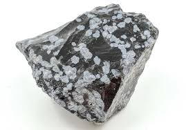

Ini adalah jenis obsidian yang paling umum,
berwarna hitam pekat. Obsidian hitam sering
digunakan dalam pembuatan alat dan senjata di
zaman prasejarah, serta dalam perhiasan dan
artefak budaya.
Ini adalah Foto Black Obsidian

Mengandung inklusi kristal kecil yang disebut
spherulites, yang memberikan tampilan bercak-
bercak putih mirip dengan salju. Inklusi ini
terbentuk dari mineral cristobalite.
Ini adalah Foto Snowflake Obsidian

Memiliki kilauan warna-warni yang muncul ketika
dipotong dan dipoles dengan cara tertentu.
Warna-warna ini disebabkan oleh mikroskopis
lapisan tipis mineral yang memantulkan cahaya.
Ini adalah Foto Rainbow Obsidian
Obsidian ini memiliki pola berwarna cokelat
kemerahan yang menyerupai kayu mahoni. Pola
ini biasanya terbentuk karena adanya inklusi
mineral besi.
Ini adalah Foto Mahogany Obsidian

Menampilkan kilauan perak yang lembut ketika
dipoles. Kilauan ini dihasilkan oleh inklus
mineral yang memantulkan cahaya.
Ini adalah Foto Silver Sheen Obsidian
Mirip dengan obsidian perak, tetapi memiliki
kilauan emas yang lebih menonjol. Warna ini
juga dihasilkan oleh inklusi mineral tertentu.
Ini adalah Foto Gold Sheen Obsidian
Menunjukkan spektrum warna yang sangat cerah,
seperti merah, oranye, dan kuning. Kilauan warna
ini disebabkan oleh lapisan tipis dari mineral
hematit.
Ini adalah Foto Fire Obsidian